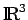
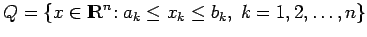
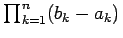
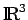
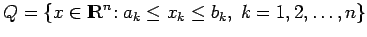
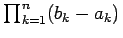

Ausgangspunkt für den Begriff eines Maßes ist eine Verallgemeinerung der Begriffe der Länge eines Intervalls in  , des Flächeninhalts und des Volumens einiger Teilmengen aus
, des Flächeninhalts und des Volumens einiger Teilmengen aus  und . Diese Verallgemeinerung wird benötigt, um möglichst viele Mengen ,,messen``zu können und möglichst viele Funktionen ,,integrierbar zu machen``. Beispielsweise hat das Volumen eines n-dimensionalen Quaders  den Wert .
und . Diese Verallgemeinerung wird benötigt, um möglichst viele Mengen ,,messen``zu können und möglichst viele Funktionen ,,integrierbar zu machen``. Beispielsweise hat das Volumen eines n-dimensionalen Quaders  den Wert .